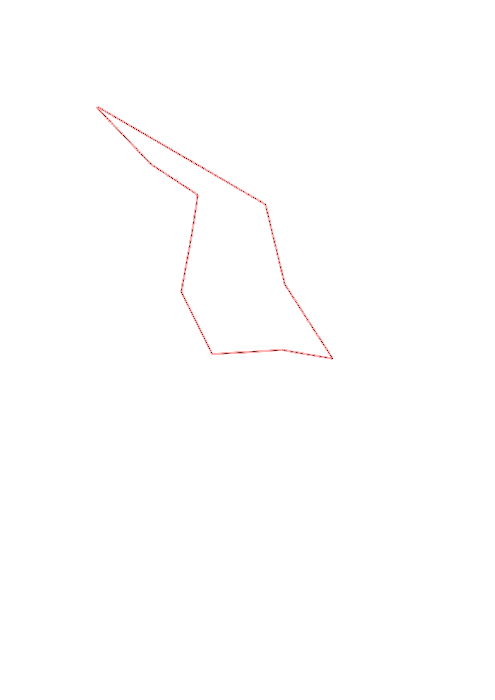
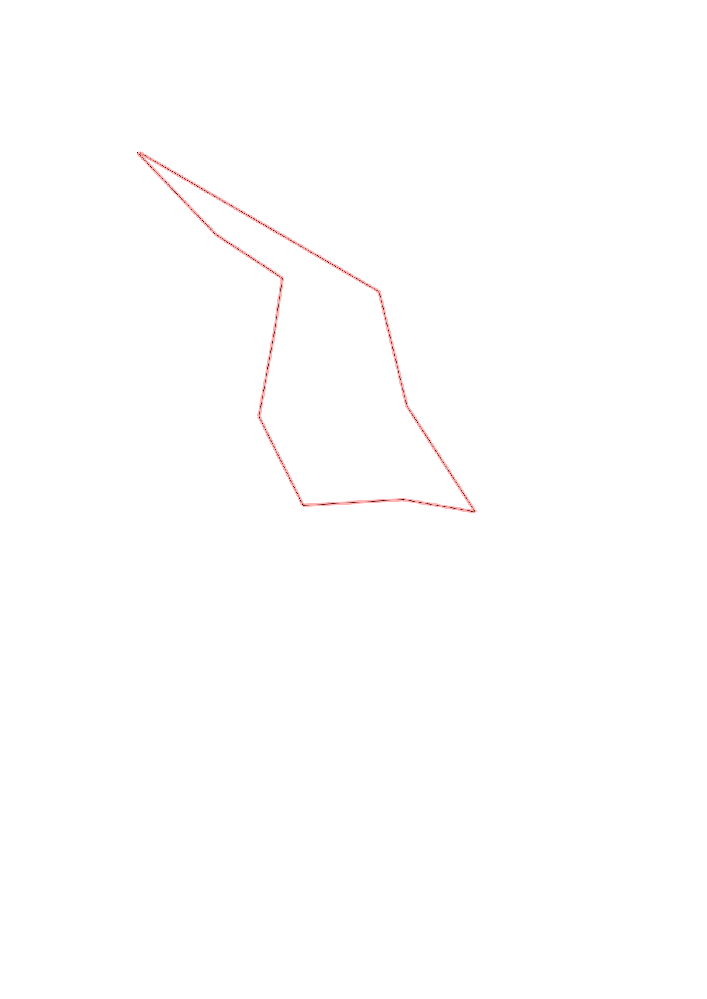

| Control |
Points |
Time Punched |
Distance |
Your Time |
Pace |
Place |
Fastest Time |
Median Time |
% Behind Fastest |
| 42 |
40 |
|
0.48 |
0:02:31 |
05:14 |
5 / 7 |
0:02:11 |
0:02:17 |
15% |
| 95 |
90 |
|
0.34 |
0:06:34 |
19:18 |
5 / 6 |
0:02:25 |
0:04:50 |
171% |
| 43 |
40 |
|
0.22 |
0:02:20 |
10:36 |
5 / 6 |
0:01:27 |
0:01:53 |
60% |
| 75 |
70 |
|
0.38 |
0:02:30 |
06:34 |
3 / 6 |
0:01:45 |
0:03:10 |
42% |
| 103 |
100 |
|
0.42 |
0:04:43 |
11:13 |
2 / 3 |
0:03:39 |
0:04:43 |
29% |
| 55 |
50 |
|
0.43 |
0:05:48 |
13:29 |
1 / 1 |
0:05:48 |
0:05:48 |
0% |
| 85 |
80 |
|
0.31 |
0:03:42 |
11:56 |
2 / 2 |
0:02:32 |
0:03:07 |
46% |
| 104 |
100 |
|
0.54 |
0:06:55 |
12:48 |
3 / 3 |
0:04:02 |
0:04:29 |
71% |
| 63 |
60 |
|
0.5 |
0:06:17 |
12:34 |
1 / 2 |
0:06:17 |
0:06:34 |
0% |
| Finish |
0 |
|
1.17 |
0:16:16 |
13:54 |
1 / 1 |
0:16:16 |
0:16:16 |
0% |
Total Distance Covered: 4.79km
Points Scored: 630
Late Penalty: 0
Final Score: 630
Total Time: 0hours 57minutes 36seconds
Efficiency: 131.52 points/km
 
